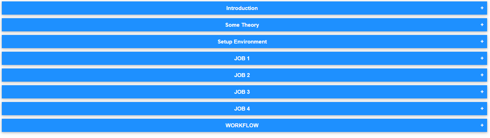

MLOps Tutorial: Automating ML-Model Training using Jenkins, Docker and GitHub.
 In this Tutorial, we are going to automate our model training to get best accuracy.Go through the steps
Go through the steps
The accuracy depends on many factors such as:
Thus we try to make some different combinations of these factors and try each combination one by one to see which would give us best accuracy.
THUS, in this example we are going to do similar thing.
For running our python code I am using the Docker image created by me MY PROFILE on Docker Hub (check the image)
Pull the Github repo automatically when some developers push repo to Github.
Run the code and train model for accuracy by using combination number 1
HERE IS THE CODE OF EXECUTE SHELL:
cd /mlcode/if (cat cnn.py | grep "Sequential" && cat cnn.py | grep "Dense" && cat cnn.py | grep "Convolution")thensudo docker run --rm --name my-running-script -v /mlcode:/usr/src/myapp -w /usr/src/myapp pradyum619/mykeras:v2 python cnn.pyelif (cat cnn.py | grep "Sequential" && cat cnn.py | grep "Dense" )thenecho "module is NN"elseecho "module is Not DeepLearning"fiCONFIG AS FOLLOWS:

CONFIG AS FOLLOWS
We get the accuracy at any combination and a mail, thus everything is perfect
We dont get accuracy more than 80% so our code will give index out of bound error when all combinations are carried out aand job2 will be unstable and a mail will be sent to us